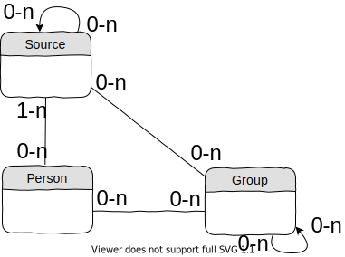

Class diagram

Cardinalities use UML syntax for the directions,
and Merise notation for the values.
and Merise notation for the values.
Example:
1 source is related to 0 or more persons
0 => a source can exist without being related to any person.
0 => a source can exist without being related to any person.
1 person is related to 1 or more sources
1 => a person cannot exist in the database without being related to a source.
1 => a person cannot exist in the database without being related to a source.
- Information sources, origin of the data manipulated by g5.
- Famous people who are studied.
-
A collection of persons.
Groups are used for several purposes, in particular to group persons by occupation.
Syntax
The structure of the entities are described in yaml files located with the source code of the model.
src/model/
├── Group.php
├── Group.yml
├── Person.php
├── Person.yml
├── Source.php
└── Source.yml
For example, file Person.yml contains an empty person with all its fields empty.
This provides to the code a precise definition of the entities, used as the description of a new type.
G5 unique id
All entities have one unique id: its slug.A slug is a string that can be used in a URL.
It only contains lower case letters without accents [a-z], digits [0-9], and hyphen (-).
A slug is unique within a given type - ex: 2 groups cannot have the same slug.
Examples
| Entity type | Slug example |
|---|---|
| Person | poincare-henri-1854-04-29 |
| Group | muller5-1083-medics |
| Source | lerrcp |
| Occupation | artist |
Implementation
The database uses postgresql.SQL to create the tables are located in
src/model/db-create-tables
G5 database uses jsonb type to store structured (hierarchical) fields.
Example of queries
The use of jsonb type implies to use an unusual syntax to query the database.
Show person with Gauquelin id = 'A1-514':
select * from person where ids_partial->>'lerrcp'='A1-514';Show the same person using the field
ids-in-sources:
select * from person where ids_in_sources->>'a1'='514';
select * from person where ids_in_sources @> '{"a1": "154"}';
List persons whose name has not been restored yet (family name starting by "Gauquelin-", see page on Gauquelin series A).
select ids_in_sources from person where name->>'family' like 'Gauquelin-%' order by ids_in_sources;List person with issues:
select * from person where jsonb_array_length(issues) != 0 order by slug;Compute the number of persons with a birth time:
select count(*) from person where length(birth->>'date') > 10 or length(birth->>'date-ut') > 10;List different countries present in the database:
select distinct birth->'place'->>'cy' as country from person order by birth->'place'->>'cy';